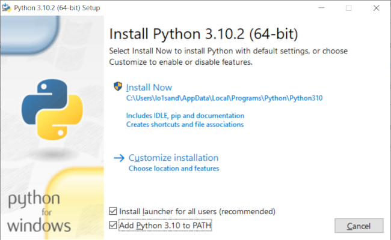
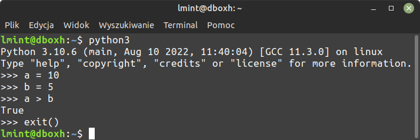
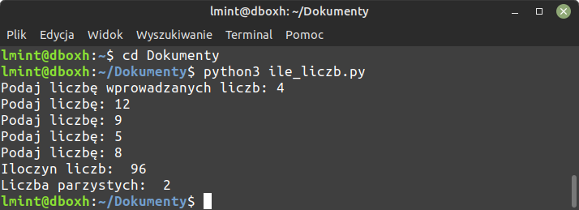
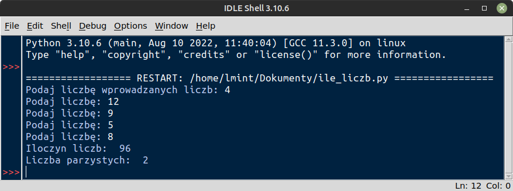

Python to język interpretowany, wysokiego poziomu, obiektowy, umożliwia również programowanie strukturalne i funkcyjne.
Interpreter Pythona to program, który wykonuje skrypty zapisane w plikach z rozszerzeniem ".py" i polecenia wprowadzane w trybie interaktywnym. W systemach Linux interpreter jest preinstalowany. W systemie MS Windows należy do zainstalować.

Uruchom terminal (wiersz poleceń) i wpisz polecenie python3. Interpreter Pythona zostanie uruchomiony w trybie interaktywnym. Po znaku zachęty >>> możesz wpisywać wyrażenia i instrukcje, które chcesz przetestować. Wpisz exit(), aby opuścić tryb interaktywny.

Uruchom terminal (wiersz poleceń) w katalogu zawierającym skrypt, który chcesz wykonać. Wydaj polecenie:
python3 nazwa_skryptu.py – które spowoduje wykonanie podanego skryptu przez interpreter.

Skrypty Pythona możesz uruchamiać również z poziomu edytora kodu, o ile oferuje taką funkcję. Na przykład w edytorze IDLE wczytany skrypt uruchomisz naciskając klawisz F5.

ciągi znaków otaczamy cudzysłowami albo pojedynczymi, albo podwójnymi
nawiasy, o ile nie są częścią ciągu znaków, występują zawsze parami
operatory otacza się spacjami
dwukropek (:) zapowiada blok kodu, czyli wcięcia
bloki kodu wcina się 4 spacjami i ich wielokrotnościami
w wierszu powinny występować maksymalnie 72 znaki
znak # oznacza komentarz, przy czym:
#!/usr/bin/env python3# -*- coding: utf-8 -*-if, elif, else, for, while"Adam" lub liczbowe 10, 2.345 – które mogą być przypisywane zmiennym+, -, /, *) lub logiczne (<, >, ==, !=)int((a + b) / 2)moja_zmiennaPython wykorzystuje typowanie dynamiczne (ang. duck typing). Zmienne inicjuje się przez przypisanie im jakiejś wartości. Zmienne "przechowują" lub inaczej "wskazują na" wartości określonego typu.
"", '', " ", '12345'10,1.2345,True (1, prawda) lub False (0, fałsz)Inicjacja zmiennej wymaga operacji przypisania, tj. podania nazwy, operatora przypisania (=) oraz wartości określonego typu, np. ciągu znaków, liczby całkowitej itd. Wartość może być wynikiem wyrażenia lub funkcji.
imie = "Adam" – inicjacja zmiennej zawierającej znakiliczba = input("Podaj liczbę: ") – inicjacja zmiennej wartością zwróconą przez funkcjęa = 5, pi = 3.14 – inicjacja zmiennej zawierającej liczbyparzysta = False – inicjacja zmiennej zawierającej wartość logicznąiloczyn = (2 * a) + 1 – inicjacja zmiennej za pomocą wyrażenia** – potęgowanie*, /, //, % – mnożenie, dzielenie, dzielenie całkowite, dzielenie modulo (reszta z dzielenia)+, - – dodawanie, odejmowanie<, <=, >, >=, !=, == – operatory porównań, mniejsze, mniejsze lub równe, większe, większe lub równe, różne, równenot x – operator logiczny, negacjaand – operator logiczny, koniunkcjaor – operator logiczny, alternatywałączenie ciągów znakowych (tzw. konkatenacja) za pomocą operatora +, np. "10" + "1"
operacje arytmetyczne zgodne z kolejnością działań: 1. nawiasy, 2. potęgowanie, 3. mnożenie, 4. dzielenie, 5. dodawanie, 6. odejmowanie – i priorytetem operatorów, np.: (a + 2.5) // 2**b
testowanie wyrażeń logicznych, które:
None, False, 0, puste sekwencje lub kolekcje, tj. '', (), [], {}, set(), range(0)<, <=, >, >=, !=, ==) i operatory logiczne not, and, ora == b – operacja porównaniapobieranie danych z klawiatury – instrukcja wejścia input("komunikat dla użytkownika") zwraca dane jako tekst (typ str!)
wypisywanie komunikatów – instrukcja print("komunikat") wypisuje znaki lub zmienne w terminalu
print("komunikat", a) – wypisanie ciągu znaków i wartości zmiennej aprint(*lista) – wypisanie elementów listy (sekwencji)print(f"{a} jest większe od {b}") – wypisanie ciągu formatowanego (tzw. f-string), w miejsce nawiasów klamrowych wstawiane są wartości zmiennych lub wyrażeńrzutowanie typów danych:
int("123") – zamiana tekstu na liczbę całkowitąfloat("2.5") – zamiana na liczbę zmiennoprzecinkowąstr(10) – zamiana np. liczby na tekstOgólna forma:
if warunek1:
instrukcja lub blok instrukcji wykonywanych gdy warunek1 jest prawdą
elif warunek2:
instrukcja lub blok instrukcji wykonywanych gdy warunek2 jest prawdą
else:
instrukcja lub blok instrukcji wykonywanych gdy warunki nie są prawdziwe
Przykłady:
# sprawdzamy, czy a jest parzyste
if a % 2 == 0:
print("Liczba", a, "jest parzysta!")
else:
print("Liczba", a, "nie jest parzysta!")
Forma z dodatkowym testem:
# sprawdzamy, czy a jest większe, czy równe b
if a > b:
printf("Liczba {a} jest większa od {b}!")
elif a == b:
printf("Liczby {a} i {b} są równe!")
else:
printf("Liczba {a} jest mniejsza od {b}!")
Zagnieżdżanie instrukcji warunkowych:
# sprawdzamy, czy a jest większe od b i c
if a > b:
# ewentualna instrukcja lub instrukcje
if a > c:
print("Liczba {a} jest największa.")
else:
ewentualna instrukcja lub instrukcje
Zastąpienie zagnieżdżonych instrukcji warunkowych warunkiem złożonym:
if a > b and a > c:
print("Liczba {a} jest największa.")
elif a == b or a == c:
print("Liczba a jest równa b lub c.")
else:
print("Liczba a jest mniejsza od b lub c.")
Przykłady pętli for (wykonuje się określoną liczbę razy):
# pętla, która wykona się 10 razy
for i in range(10):
print(i) # powtarzana instrukcja wypisująca wartość i
# pętla, która odczyta wszystkie znaki z napisu
napis = "abcde"
for znak in napis:
print(znak) # powtarzana instrukcja wypisująca kolejne znaki
Przykłady pętli while (wykonuje się, dopóki warunek jest prawdziwy):
# pętla, która wykonuje się dopóki warunek a > 0 jest prawdziwy
a = 10
while a > 0:
a = a - 1
# pętla, która pobiera liczbę z klawiatury, dopóki liczba jest ujemna lub równa 0
liczba = int(input("Podaj liczbę: "))
while liczba <= 0:
liczba = int(input("Podaj liczbę: "))